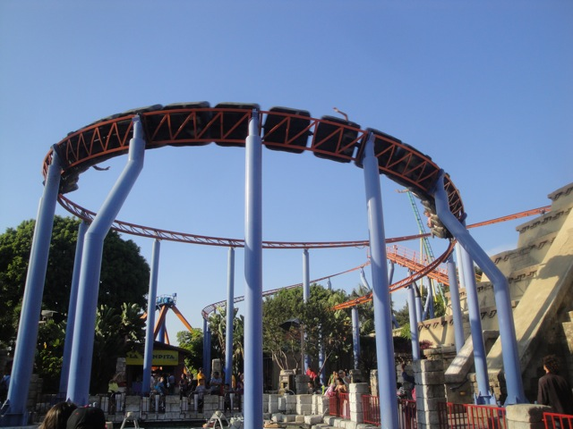
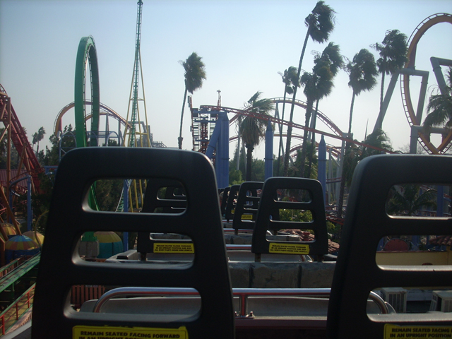

| |
Jaguar Review

We're here at Knotts Berry Farm to review their family coaster and the one you see snaking around the park. Jaguar. Once you find the entrance, you go through an awsome line. Unfortunetly, the line is the best part of the ride. As you watch the looong train train arrive, you climb into your plastic seat with no leg room what-so-ever. Once you crest the lift, you glide down into a curving first drop and glide into a helix. The helix is fun because you can wave to people from it. Then after that, it's off to the next element. After a section of straight track, you glide through Montezooma's loop and cruise around a turn. After that, you slide into the second lift. After the second lift, you slowly accelerate as you crawl down the almost flat drop. After eventually gaining the speed, you cruise around the remains of the lake and get a nice view of Silver Bullet. After a bunny hop, you cruise through a turnaround which leads you to glide into an S Bend. You get some mild laterals in the S Bend, so that's pretty cool. After that, you glide through a bunch of straight track. After that, you go into a big helix. But don't be expecting anything like Ghostrider, Goliath, Raptor, or Bazooka Bowls. You just cruise through this helix. After that, you glide into the brakes. As you can obviously tell, this is NOT an extreme thriller. But most of the ride, it feels like it's going the speed. Aside from the drops off the lifthills, it never seems to accelerate, or declerate. It almost feels like a giant powered coaster. If you're not into coasters, a credit whore, or just want to ride a cruiser, this is for you. If you want something extreme, I'd ride something else.
5/10
Location: Knotts Berry Farm
Opened: 1995
Built by: Zeirer
Last Ridden: May 6, 2024
Jaguar Photos








Home
|